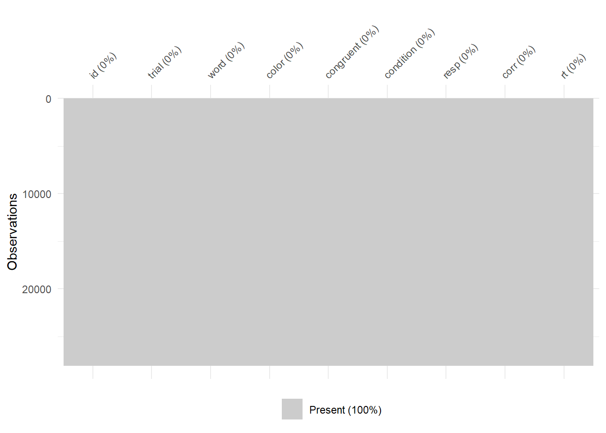
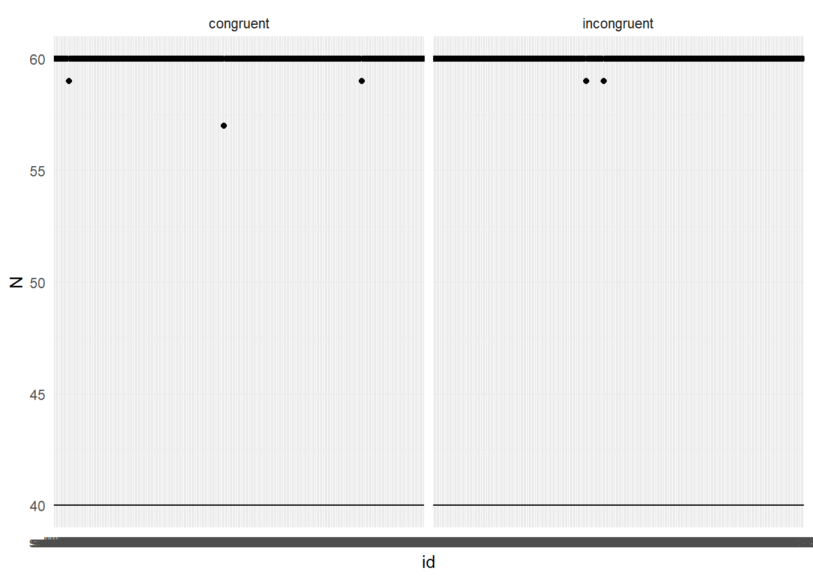
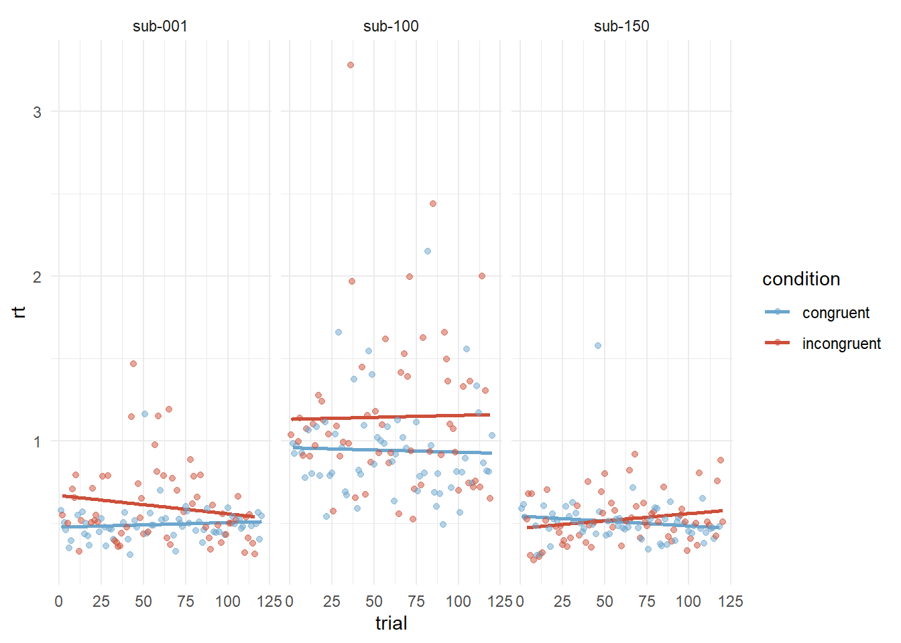
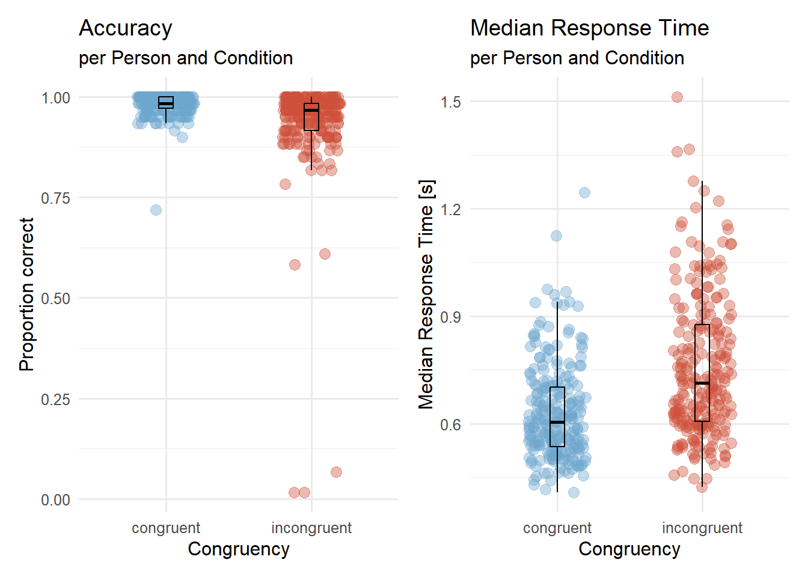
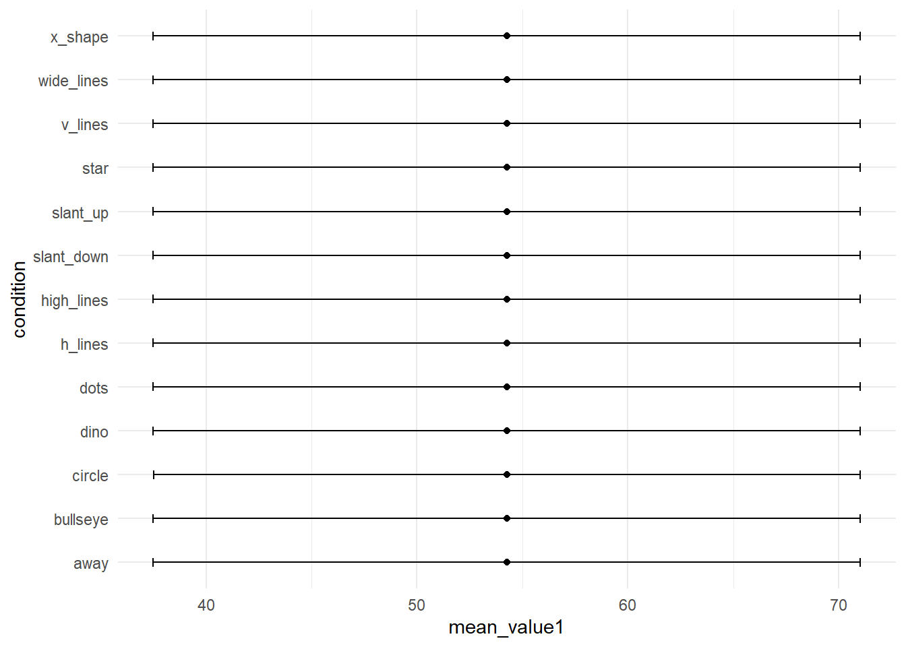

Datenvisualisierung ist ein wichtiger Schritt in der Analyse neurowissenschaftlicher Daten. Das grafische Darstellen von Informationen dient dazu die Datenkomplexität zu reduzieren und wichtige Eigenschaften herauszuheben und zusammenzufassen.
Dabei geht es nicht nur darum Ergebnisse zu kommunizieren, sondern auch dazu Einsichten über die Daten zu gewinnen: Auch wenn in den meisten wissenschaftlichen Artikeln nur wenige Grafiken gezeigt werden, wurden die Daten oft während der Analyse zahlreiche Male visualisiert.
Wir schauen uns drei Kernaufgaben der Datenvisualisierung an:
Diagnostik: Daten untersuchen
Analyse: Daten zusammenfassen
Kommunikation: Forschungsergebnisse visualisieren
Je nachdem welchem Zweck eine Grafik dienen soll, müssen andere Grafikeigenschaften berücksichtigt werden. Diagnostische Grafiken müssen beispielsweise nicht in erster Linie ästhetisch ansprechend sein, sondern aufzeigen, wo Probleme im Datensatz vorliegen könnten. Eine “gute” Grafik komprimiert die Information in den Daten so, dass Erkenntnisse gewonnen werden können.
Hands-on: Vorbereitung
Variante A: RProject selbst erstellen:
Erstellen Sie ein RProject in R.
Laden Sie den Datensatz dataset_stroop_clean.csvhier herunter und speichern Sie diesen in dem Ordner data im Ordner Ihres RProjects.
Laden Sie den Datensatz DatasaurusDozen.csvhier herunter und speichern Sie diesen in dem Ordner data im Ordner Ihres RProjects.
Öffnen Sie ein neues RScript (.R) oder RMarkdown-File (.Rmd). In einem RMarkdown-File können Code und Text verbunden werden und die die Outputs des Codes (z.B. Grafiken) werden anzeigt.
Im Projekt wird mit einem RNotebook gearbetet: So kann Code und Text verbunden werden, und Code-Outputs z.B. Grafiken können inline angezeigt werden, zudem ermöglicht dieses Vorgehen reproduzierbare Grafiken. Sie können in das RNotebook den untenstehenden Code kopieren und modifizieren, um die Datenvisualisierungen nachzuvollziehen und damit zu üben.
# Packages ladenlibrary(tidyverse)library(patchwork)# Daten einlesen und Textvariablen zu Faktoren umwandelnd <-read_csv("data/dataset_stroop_clean.csv") |>mutate(across(where(is.character), as.factor))# Datensatz anschauend |>slice_head(n =10)
# A tibble: 10 × 9
id trial word color congruent condition resp corr rt
<fct> <dbl> <fct> <fct> <dbl> <fct> <fct> <dbl> <dbl>
1 sub-001 1 blau blue 1 congruent b 1 0.578
2 sub-001 2 blau yellow 0 incongruent g 1 0.550
3 sub-001 3 blau blue 1 congruent b 1 0.505
4 sub-001 4 rot red 1 congruent r 1 0.459
5 sub-001 5 gelb red 0 incongruent r 1 0.501
6 sub-001 6 rot red 1 congruent r 1 0.351
7 sub-001 7 gelb yellow 1 congruent g 1 0.395
8 sub-001 8 rot yellow 0 incongruent r 0 0.706
9 sub-001 9 rot blue 0 incongruent b 1 0.653
10 sub-001 10 blau red 0 incongruent r 1 0.791
12.1 Diagnostik: Daten untersuchen
Datensätze können sehr komplex sein, deshalb ist die Visualisierung der Daten ein hilfreicher erster Schritt. Mit Hilfe von Visualisierungen können Aussagen über die Qualität der Daten gemacht werden, z.B. über:
Fehlende Werte
Aufgabenschwierigkeit
Extreme Datenpunkte (Ausreisser)
Zeitverläufe
Verteilung der Daten
Diagnostische Grafiken dienen dazu, rasch an Informationen zu können und Probleme in Datensätzen zu entdecken. Die Grafiken müssen daher nicht ästhetisch ansprechend oder für Aussenstehende verständlich sein. Im Sinne der Reproduzierbarkeit lohnt es sich aber, auch diese Visualisierungen gut zu dokumentieren.
Im Folgenden schauen wir uns Beispiele für diagnostische Grafiken an.
12.1.1 Fehlende Werte
Hierbei ist es wichtig, vor allem systematisch fehlende Datenpunkte zu entdecken: Fehlt bei einer Person die Hälfte der Antworten? Möchten wir diese ausschliessen?
Diese können mit dem Package {naniar} relativ schnell sichtbar gemacht werden. Es gibt keine missings in unserem Fall.
naniar::vis_miss(d)

Für die Analyse schliessen wir alle Reaktionszeiten unter 100ms und über 8 Sekunden aus.
# zu schnelle und zu langsame Antworten ausschliessend <- d |>filter(rt >0.099& rt <8)
Wir berechnen nun für die kommenden Grafiken die Anzahl Trials pro Person, die accuracy, sowie die mittlere Reaktionszeit für die Bedingungen congruent und incongruent (wie im Kapitel Aggregierte Statistiken beschrieben).
# Daten gruppieren: Anzahl Trials, Accuracy und mittlere Reaktionszeit berechnenacc_rt_individual <- d |>group_by(id, condition) |>summarise(N =n(),ncorrect =sum(corr),accuracy =mean(corr),median_rt =median(rt) )acc_rt_individual
Nachdem wir Trials ohne Antwort ausgeschlossen haben, interessiert es uns, wie viele Trials jede Versuchsperson gelöst hat:
# Plot: Anzahl Trials pro Bedingung für jede Versuchsperson acc_rt_individual |>ggplot(aes(x = id, y = N)) +geom_point() +facet_wrap(~ condition) +geom_hline(yintercept =40) +# Horizontale Linie einfügentheme_minimal()
Wir könnten alle Personen ausschliessen, die weniger als 40 gültige Trials hatten (in unserem Beispiel nicht nötig, da alle genügend Trials haben).
Code: Daten ausschliessen
# Datensatz mit allen Ids, welche zuwenig Trials hattenn_exclusions <- acc_rt_individual |>filter(N <40) # Aus dem Hauptdatensatz diese Ids ausschliessend <- d |>filter(!id %in% n_exclusions$id) # Checkd_acc_rt_individual <- d |>group_by(id, condition) |>summarise(N =n(),ncorrect =sum(corr),accuracy =mean(corr),median_rt =median(rt) )d_acc_rt_individual |>ggplot(aes(x = id, y = N)) +geom_point() +facet_wrap(~ condition) +geom_hline(yintercept =40) +# Horizontale Linie einfügentheme_minimal()

12.1.2 Extreme Datenpunkte (Ausreisser)
Wir können Visualisierungen auch verwenden, um extreme Datenpunkte zu identifizieren. Dafür teilen wir hier die Accuracywerte in 3 Gruppen ein und plotten diese:
Es können einzelne Trials oder auch die gesamten Daten einer Versuchsperson ausgeschlossen werden, weil z.B. die Accuracy zu tief war, fehlende Werte bestanden, etc.
Hierbei ist wichtig:
Datenpunkte werden nie aus den Rohdaten gelöscht, sondern nur aus dem aktuell geladenen Datensatz, welcher für die Analysen verwendet und neu abgespeichert wurde. So können wir uns immer noch umentscheiden und verlieren nicht die Information, welche Daten gefehlt haben.
Dadurch, dass die Datenverarbeitung in R mit reproduzierbarem Code geschrieben ist, können wir immer überprüfen, ob ein Fehler in unserer Datenverarbeitung zu den missings geführt hat und diesen evtl. korrigieren.
Es macht nicht immer Sinn die Trials mit missing data zu löschen! Dies muss von Fall zu Fall entschieden werden. Wenn Versuchspersonen zum Beispiel teilweise zu lange brauchten um eine Aufgabe zu lösen, dann ist das eine wichtige Information, wird diese rausgelöscht, wird die Leistung der Versuchsperson systematisch überschätzt.
In unserem Beispiel macht es Sinn, die drei Versuchspersonen, die extrem tiefe Accuracy hatten (wahrscheinlich weil sie die Aufgabe falsch verstanden hatten) vor den Analysen aus dem Datensatz auszuschliessen.Zuerst schauen wir uns an, welche Versuchspersonen sehr tiefe accuracy-Werte hatten:
acc_rt_individual |>filter(accuracy <0.33) # 0.33 ist das chance level
Dann schliessen wir diese 3 Personen aus. Hierbei empfiehlt es sich, den Code so zu kommentieren, dass man später direkt sieht, weshalb eine Person ausgeschlossen wurde.
# Aussschluss dieser Personend <- d |>filter(id !="sub-009") |># Ausschluss wegen zu tiefer Accuracy (< 0.33)filter(id !="sub-180") |># Ausschluss wegen zu tiefer Accuracy (< 0.33)filter(id !="sub-201") # Ausschluss wegen zu tiefer Accuracy (< 0.33)
12.1.4 Verlaufseffekte: Ermüdung und Lernen
Verlaufseffekte sind relevant, wenn man z.B. Ermüdungs- oder Lerneffekte ausschliessen möchte. Sie könnten aber auch inhaltlich interessant sein, z.B. in einem Trainingskontext, wenn man sich dafür interessiert, wie viele Trials nötig sind, damit sich jemand in einer Aufgabe verbessert.
In unserem Experiment möchten wir sicher sein, dass die Performanz sich über die Zeit hinweg nicht zu stark verändert. Hierzu können wir beispielsweise die accuracy plotten:
# Plot: Reaktionszeit über die Trials hinweg (für 3 Versuchspersonen)d |>filter(id %in%c("sub-001", "sub-100", "sub-150")) |>ggplot(aes(x = trial, y = rt, color = condition)) +geom_smooth(method ="lm", se =FALSE) +geom_point(alpha =0.5) +scale_color_manual(values =c(congruent ="skyblue3",incongruent ="tomato3")) +facet_wrap(~ id) +theme_minimal()

12.1.5 Aufgabenschwierigkeit und Performanz der Versuchspersonen
Bevor wir die Daten analysieren, möchten wir wissen, ob die Personen die Aufgabe einigermassen gut lösen konnten (und wollten). In unserem Experiment erwarten wir eine Genauigkeit (accuracy) über dem Rateniveau von 33%. Wir plotten hierfür die accuracy für jede Person und Bedingung.
# Plot accuracy per person and conditionp1 <- d_acc_rt_individual |>ggplot(aes(x = condition, y = accuracy, color = condition)) +geom_jitter(size =3, alpha =0.4, width =0.2, height =0) +geom_boxplot(width =0.1, alpha =0, color ="black") +scale_color_manual(values =c(congruent ="skyblue3",incongruent ="tomato3")) +labs(x ="Congruency",y ="Proportion correct",title ="Accuracy",subtitle ="per Person and Condition") +theme_minimal(base_size =12) +theme(legend.position ="none")p2 <- d_acc_rt_individual |>ggplot(aes(x = condition, y = median_rt, color = condition)) +geom_jitter(size =3, alpha =0.4, width =0.2, height =0) +geom_boxplot(width =0.1, alpha =0, color ="black") +scale_color_manual(values =c(congruent ="skyblue3",incongruent ="tomato3")) +labs(x ="Congruency",y ="Median Response Time [s]",title ="Median Response Time",subtitle ="per Person and Condition") +theme_minimal(base_size =12) +theme(legend.position ="none")library(patchwork)p1 + p2

Und wir interessieren uns, wie sich die accuracy zwischen den Bedingungen unterscheidet. Das zeigt uns, ob die Instruktion eine Wirkung hatte. Dafür fügen wir Linien ein, die die accuracy- Werte pro Versuchsperson verbindet:
p3 <- d_acc_rt_individual |>ggplot(aes(x = condition, y = accuracy, color = condition, group = id)) +geom_line(color ="grey40", alpha =0.5) +geom_jitter(size =3, alpha =0.8, width =0, height =0) +scale_color_manual(values =c(congruent ="skyblue3",incongruent ="tomato3")) +labs(x ="Congruency",y ="Proportion correct",title ="Accuracy",subtitle ="per Person and Condition") +theme_minimal(base_size =12) +theme(legend.position ="none")p4 <- d_acc_rt_individual |>ggplot(aes(x = condition, y = median_rt, color = condition, group = id)) +geom_line(color ="grey40", alpha =0.5) +geom_jitter(size =3, alpha =0.8, width =0, height =0) +scale_color_manual(values =c(congruent ="skyblue3",incongruent ="tomato3")) +labs(x ="Congruency",y ="Median Response Time [s]",title ="Median Response Time",subtitle ="per Person and Condition") +theme_minimal(base_size =12) +theme(legend.position ="none")p3 + p4
Hands-on: Datenqualität
Besprechen Sie miteinander, was Sie nun über unsere Daten wissen.
Haben die Versuchspersonen die Aufgaben lösen können?
War die Aufgabe zu einfach, zu schwierig?
Denken Sie, die Personen waren motiviert?
Welche Datensätze / Trials möchten wir ausschliessen? (Achtung: Dies müsste eigentlich vor dem Anschauen der Daten entschieden werden, um zu verhindern, dass man Datenpunkte ausschliesst, welche die Hypothese nicht bestätigen.)
Wie gut eignen sich die Daten, um die Forschungsfrage zu beantworten?
Was könnte bei einem nächsten Experiment besser gemacht werden?
12.2 Analyse: Daten zusammenfassen und explorieren
Grafiken können einerseits eine Ergänzung zur statistischen Datenanalyse sein, wie auch die Resultate der Analysen (bspw. geschätzte Parameterwerte) visualisieren. Sie haben den Vorteil, dass Informationen über Daten oder Analyseergebnisse gleichzeitig ersichtlich sind, sie können also vom Betrachtenden direkt verglichen werden.
Wir möchten die Daten hinsichtlich der Forschungsfragen visualisieren. Die Grafiken müssen vor allem präzise und informativ sein. Um Schlüsse aus Daten ziehen zu können, müssen diese zusammengefasst werden. Dazu eignen sich Lagemasse oder Masse der zentralen Tendenz, also beispielsweise der Mittelwert, Median oder Modus. Gleichzeitig ist es wichtig, dass auch Verteilungsmasse berichtet werden, wie Standardabweichungen oder Standardfehler. Wir können auch mit Werte aus statistischen Modellen, wie Parameterschätzungen und Konfidenzintervalle, grafisch darstellen.
Mit Hilfe von Visualisierungen können z.B. Aussagen können gemacht werden über:
Verteilung der Daten
Zusammenhänge von Variablen (Korrelationen, Zeitverläufe)
Vergleiche und Unterschiede von Gruppen / Bedingungen
12.2.1 Verteilung der Rohdaten
Daten von neurowissenschaftlichen Studien können wichtige Informationen enthalten, die ohne Grafiken übersehen werden können (Rousselet, Pernet, and Wilcox (2017)). Das Visualisieren kann Muster zum Vorschein bringen, die durch statistische Auswertungen nicht sichtbar sind. Die Wichtigkeit von Datenvisualisierung für das Entdecken von Mustern in den Daten zeigte Francis Anscombe 1973 mit dem Anscombe’s Quartet. Dies diente als Inspiration für das Erstellen des “künstlichen” Datensatzes DatasaurusDozen, welchen wir in der letzten Veranstaltung visualisiert haben. Verschiedene Rohwerte, können dieselben Mittelwerte, Standardabweichungen und Korrelationen ergeben. Nur wenn man die Rohwerte plottet erkennt man, wie unterschiedlich die Datenpunkte verteilt sind.
Dies wird ersichtlich, wenn wir die Mittelwerte und Standardabweichungen für jede Gruppe berechnen und plotten:
# load DatasaurusDozen datasetdino_data <-read.csv("data/DatasaurusDozen.csv") %>%mutate(condition =as.factor(condition))# Plot mean and standard deviation for value 1 per condition dino_data |>group_by(condition) |>summarise(mean_value1 =mean(value1),sd_value1 =sd(value1)) |>ggplot(mapping =aes(x = mean_value1,y = condition)) +geom_point() +geom_errorbar(aes(xmin = mean_value1 - sd_value1, xmax = mean_value1 + sd_value1), width =0.2) +theme_minimal()

Und dann die Rohwerte visualisieren:
# Plot raw valuesdino_data |>ggplot(aes(x = value1, y = value2)) +geom_point(size =1) +facet_wrap(~condition) +theme_minimal()
Masse der zentralen Tendenz sind beispielsweise der Mittelwert, der Median und Modus. Wenn wir uns dafür interessieren, wie sich die accuracy in Bezug auf alle Teilnehmenden verhält, schauen wir uns die zentrale Tendenz über alle Personen hinweg an. Es sollte nie nur die zentrale Tendenz, sondern immer auch ein passendes Verteilungsmass berichtet werden.
Wie oben schon gezeigt können wir dies z.B. mit Boxplots umsetzen Diese zeigen uns den Median und die Quartile sowie Ausreisser an. Eine andere Möglichkeit Verteilungen anzuzeigen sind die Violinplots. Hier wurden mit geom_jitter() auch die Mittelwerte der einzelnen Personen im Plot eingefügt.
Wenn wir Mittelwerte und Standardfehler angeben möchten können wir dies wie folgt tun. Wichtig ist hier, dass wir within-subject Standardfehler berechnen. Genaueres zu den Unterschieden zwischen within- und between-subject Standardfehlern finden Sie hier. Wir verwenden das Package {Rmisc}. Achtung: Da dieses jedoch wegen der Namen der Funktionen oft Namens-Konflikte auslöst, laden wir Rmisc nicht mit der library()-Funktion, sondern stellen es einfach vor die benötigte Funktion, z.B. so Rmisc::summarySEwithin().
Hier finden Sie weitere Code-Beispiele für das Plotten von Verteilungsmassen.
Hier finden Sie Informationen, wie Reaktionszeiten zusammengefasst und visualisiert werden könnten.
12.2.4 Visualisieren von Modellschätzungen
Wenn für die statistische Analyse ein Modell geschätzt wurde, kann auch dies visualisiert werden. Auf diese Form der Visualisierung wird in diesem Kapitel aber nicht eingegangen.
Kommunikation der Ergebnisse findet vor allem in den wissenschaftlichen Artikeln, Postern oder Präsentationen statt. Bei Visualisierungen die der Kommunkation dienen sind folgende Merkmale wichtig:
12.3.1 Beschriftungen
Die genaue Beschriftung und deren Lesbarkeit ist für diese Form von Grafiken zentral. Achten Sie sich auf Folgendes:
Die Achsenbeschriftungen enthalten die verwendete Variable in Klartext (nicht den R Variablennamen) und wenn zutreffend auch die Masseinheit (z.B. Response Time [ms]). Beschriftungen können Sie einfügen mit labs().
p_boxplot +labs(title ="Der Titel der Grafik", subtitle ="Der Subtitel der Grafik",x ="hier kommt Label x [Masseinheit]", y ="hier kommt Label y [Masseinheit]",caption =" Hier kommt eine Caption")
Warning: No shared levels found between `names(values)` of the manual scale and the
data's fill values.
Farben / Formen usw. werden in einer Legende den Gruppen zugeordnet (Ausnahme: wenn Daten von einzelnen Personen geplottet werden, wird die Versuchspersonennummer nicht aufgeführt).
Masse der zentralen Tendenz und Varianzmasse werden beschrieben (z.B. Standardfehler oder Standardabweichung?)
12.3.2 Fünf Merkmale einer guten Grafik
Es gibt unzählige Optionen die eigenen Daten zu visualisieren. Folgende Prinzipien helfen beim Erstellen einer informativen Grafik, die zur Kommunikation der Ergebnisse dient.
1. Eine Frage beantworten
Jede Grafik sollte mindestens eine teilweise aber auch mehrere Fragen beantworten.
👉 Welche Frage möchte ich beantworten? Welche Form der Visualisierung beantwortet diese Frage am besten?
Hierbei kann es hilfreich sein den “Arbeitstitel” der Grafik als Frage zu formulieren.
2. Zielgruppe berücksichtigen
Beim Erstellen der Grafik sollte beachtet werden, an wen sich die Grafik richtet. Für eine Präsentation müssen die Achsenbeschriftungen vergrössert und die Grafik simpel gehalten werden. In einem wissenschaftlichen Artikel kann die Grafik komplexer gestaltet werden, da die Lesenden sich mehr Zeit zum Anschauen nehmen können. Zudem sollten hier die Vorgaben des Journals berücksichtigt werden. Auch wichtig ist das Verwenden von “farbenblind-freundlichen” Palletten, rot und grün ist z.B. eine schlechte Wahl.
👉 Für welchen Zweck / für wen erstelle ich die Grafik? Wie ist das Vorwissen des Zielpublikums?
Für einen Fachartikel lohnt es sich, zu Beginn die Vorgaben der Fachzeitschrift zu berücksichtigen.
3. Die Daten zeigen
Das tönt simpel, wird aber oft nicht berücksichtigt. Bei einer Grafik geht es in erster Linie um die Daten. Es sollte die simpelste Form gewählt werden, welche die Informationen vermittelt. Oft braucht es keine ausgefallenen Grafikideen oder neuartigen Formate. Hierbei ist es wichtig, die Art der Daten zu berücksichtigen: Wie viele Variablen sind es? Sind diese kontinuierlich (z.B. Reaktionszeiten) oder diskret (z.B. Experimentalbedingungen)? Wie viele Dimensionen haben meine Daten? Mit zwei Achsen lassen sich zwei Dimensionen darstellen, zusätzlich können mit Farben und Formen noch weitere Dimensionen abgebildet werden (z.B. Millisekunden, Bedingung 1 und Bedingung 2). Es können Rohwerte geplottet werden oder summary statistics (z.B. Mittelwerte, Standardabweichungen)
👉 Welche Art Grafik eignet sich für meine Frage und meine Daten? Schauen Sie z.B. hier nach oder nutzen Sie das esquisse-Package.
Beispiele für verschiedenen Plots in R sind z.B. histogram, boxplot, violin plot, scatter plot / correlogram, jitter plot, raincloud plot, percentiles / shift functions, area chart, heat map.
4. Optimieren des data-ink ratios
Das Daten-Tinte-Verhältnis sollte so optimal wie möglich sein. Das bedeutet, das idealerweise jeder Strich, jeder Punkt, jedes Textfeld Information beinhaltet. Alles was keine Information transportiert oder nur wiederholt kann weggelassen werden.
👉 Was kann ich weglassen?
In R kann zum Schluss des Plots + theme_minimal() hinzugefügt werden, dies entfernt u.a. den grauen Hintergrund. Das Grau des Hintergrunds ist Farbe (ink), welche keine Information transportiert, das Weglassen lässt die Grafik ruhiger wirken.
5. Feedback einholen und revidieren
Das Erstellen einer guten Grafik ist iterativ, das heisst, sie wird immer wieder überarbeitet, bis sie die Information möglichst einfach, genau aber klar kommuniziert. Hierbei ist Feedback oft unerlässlich.
👉 Was denken andere über Ihre Grafik?
Matejka, Justin, and George Fitzmaurice. 2017. “Same Stats, DifferentGraphs: GeneratingDatasets with VariedAppearance and IdenticalStatistics Through SimulatedAnnealing.” In Proceedings of the 2017 CHIConference on HumanFactors in ComputingSystems, 1290–94. Denver Colorado USA: ACM. https://doi.org/10.1145/3025453.3025912.
Rousselet, Guillaume A., Cyril R. Pernet, and Rand R. Wilcox. 2017. “Beyond Differences in Means: Robust Graphical Methods to Compare Two Groups in Neuroscience.”European Journal of Neuroscience 46 (2): 1738–48. https://doi.org/10.1111/ejn.13610.
Für das Entzippen mit Windows machen Sie einen Rechtsklick auf den Ordner mit dem Reissverschluss und wählen Sie Entpacken nach und geben Sie den Ordner an, in dem Sie alle Ihre RProject-Ordner speichern. Für das Entzippen mit Mac speichern Sie den heruntergeladenen Ordner in den Ordner, in dem Sie alle Ihre RProject-Ordner speichern und Doppelklicken Sie danach auf den Ordner. Nur entzippte Ordner können einwandfrei verwendet werden!↩︎